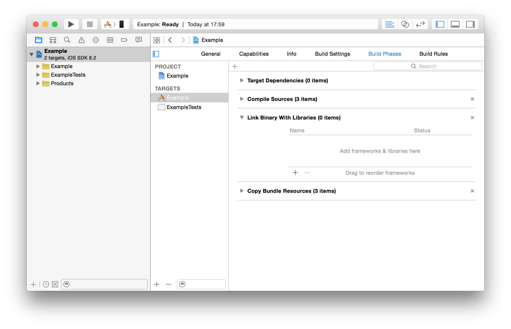
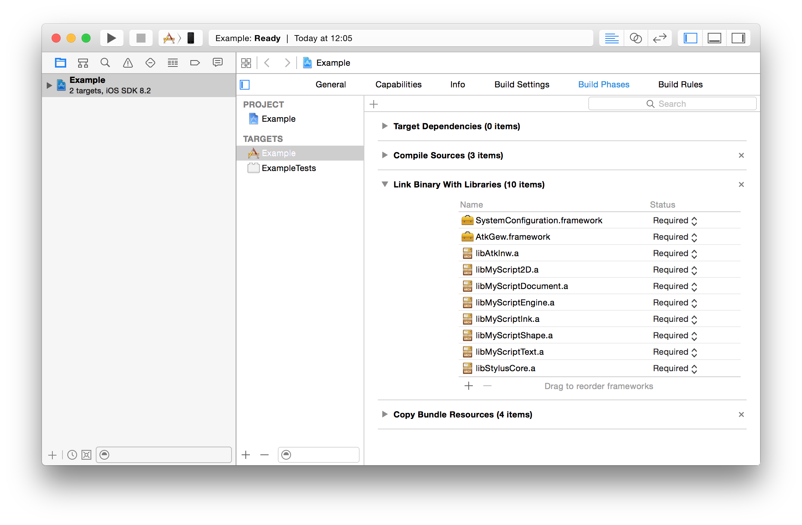
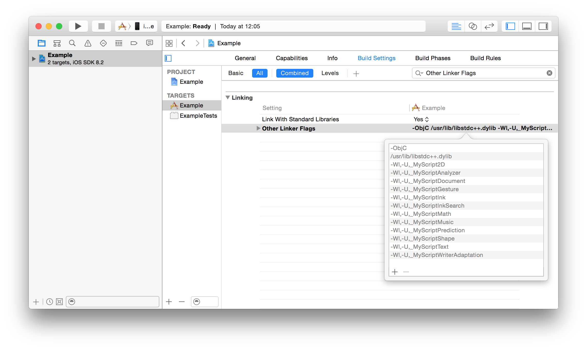
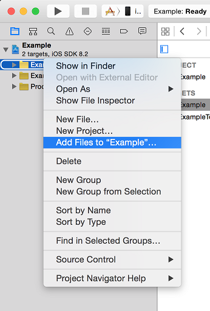
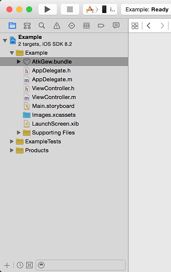

To install and integrate the Geometry Widget on iOS, you must be using the latest version of Xcode and iOS SDK. Minimum deployment target is 7.0.
The Geometry Widget for iOS is a framework that you add to your Xcode project.



The Geometry Widget requires some specific resources like images and fonts. To link these resources, add GeometryWidget.bundle to your project.
 
To use the Geometry Widget in your app, add the following import instructions:
#import <AtkGew/GeometryWidget.h>
#import "MyCertificate.h"You can instantiate a GWGeometryView with a few lines:
// Create the GeometryWidget View
GWGeometryView *geometryView = [[GWGeometryView alloc] init];
// Recognition resources
NSArray *resources = @[@"shk-standard.res"];
// Certificate
NSData *certificate = [NSData dataWithBytes:myCertificate.bytes length:myCertificate.length];
// Configure the GeometryWidget View with the recognition resources and the certificate
[geometryView configureWithResources:resources
certificate:certificate];You can then use the GWGeometryView as any UIView.